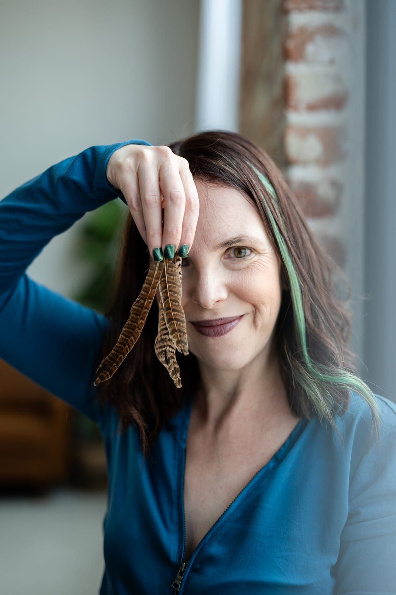

Born from a ritual,
built for transformation
Wild Transformations began with a single, body-deep experience. After a complicated birth, you took part in a Closing of the Bones ceremony — a traditional postpartum ritual practiced across many cultures.
Being witnessed by your closest friends helped you process a difficult birth story and reconnect with your own body. That moment revealed what talk alone often can’t reach — and it became the seed of a practice that braids evidence-based therapy with intentional ceremony.
With more than two decades supporting people across hospitals, community mental health, addiction recovery, and LGBTQ+ services, you built Wild Transformations as a space where people can release old stories, reconnect with their values, and step into who they’re becoming.

Why we exist
To help people navigating grief, identity shifts, and major life transitions release what no longer serves them and reclaim their power — through therapy and ritual that reach below the level of language.
The world we’re building
A world where meaningful transitions are honored, not rushed — where being witnessed is recognized as medicine, and healing is understood as active transformation rather than something to simply talk through.
Core Values
Witnessing
Nothing is more powerful than being truly seen. Presence is the foundation of every session and ceremony.
Directness is Kindness
Honest, grounded guidance that creates movement — never just conversation for its own sake.
Belonging
Trauma-informed, LGBTQ+ and neurodivergent-affirming, culturally responsive. All people are welcome here.
Integration
Reflection, symbolism, embodiment, and community woven together so insight becomes lasting change.
Soul + Science
Evidence-based methods and ancient ritual, held together with equal respect.
Wild Becoming
Giving up perfection to do the braver work of becoming yourself.